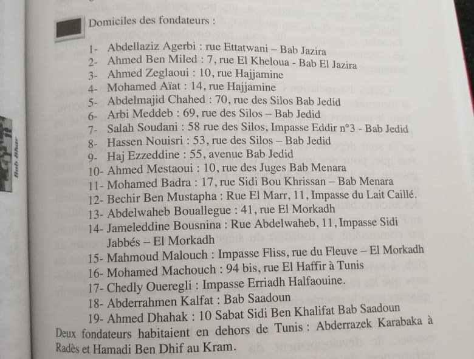

البورتريه 3 من 10 · النادي الإفريقي والأجانب قبل الاستقلال
عبد العزيز العقربي
مؤسّس النادي الإفريقي
2 وثيقتان أرشيفيتان · الصفحتان 59 و60 من الكتاب
عبد العزيز العقربي، واسمه الكامل محمد بن عبد العزيز العقربي، وُلد في 9 أكتوبر 1902. وهو شخصية أسطورية في النادي الإفريقي، وأحد أبرز مؤسّسيه رمزيةً.
من المرجّح جدًا أنكم سمعتم بعض أنصار النادي الإفريقي يؤكّدون، بإلحاح، أنهم «آباء المسرح في تونس». وإنما يقصدون بذلك السيد العقربي.
ولنكن واضحين: ليس هو وحده مؤسّس المسرح التونسي، لكنه يبقى مع ذلك أحد الروّاد الأساسيين للحركة المسرحية الوطنية، وهذا الفضل يعود إليه كاملًا.
للأسف، كان هو أيضًا يحمل الجنسية الفرنسية. ويقود هذا الواقع إلى حقيقة يصعب الطعن فيها: اثنان من مؤسّسي النادي الإفريقي كانا مواطنين فرنسيين — حمادي بن ضيف وعبد العزيز العقربي.
ولم يحصل السيد العقربي على الجنسية التونسية إلا في 25 جويلية 1957، كما ورد في الرائد الرسمي للجمهورية التونسية (JORT) الصادر في 27 أوت 1957 – الصفحة 11